Tecnología · Marketing · Eventos
KVRA
Once servicios, cada uno con el trabajo real que lo demuestra. Baja para recorrerlos.
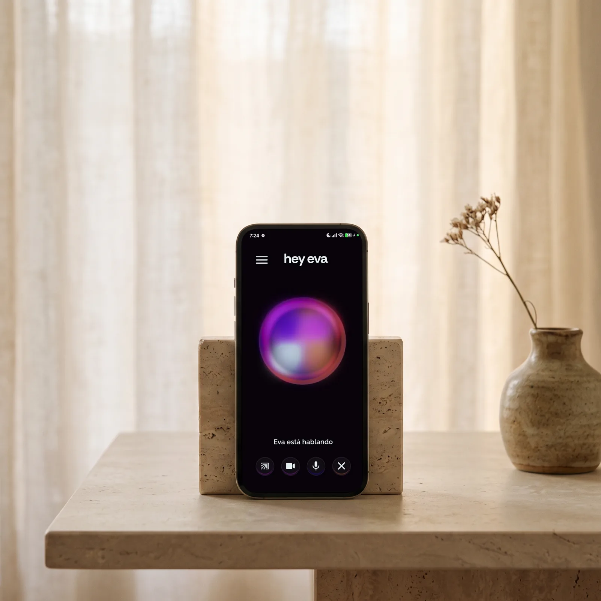
01Tecnología
Apps con inteligencia artificial
Asistentes que te escuchan, buscan el dato en vivo y te responden en voz alta. También actúan en el teléfono: ponen música o abren una app.
- Voz en tiempo real
- Memoria de cada usuario
- Hechas con Gemini y Claude
En la pantalla: Hey Eva, la app real, escuchando y respondiendo. Es un producto de Global Technology & Innovation AI, que Jerick cofundó. Ver el caso (se abre en otra pestaña)
Del portafolio4 muestras
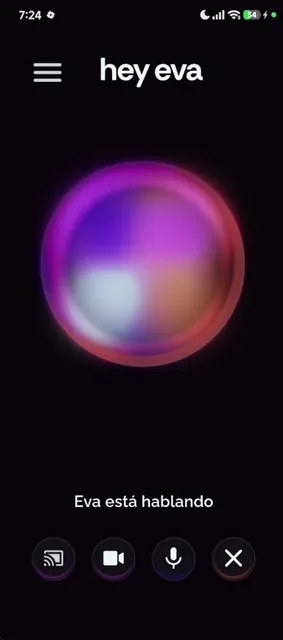
Video. Hey Eva La app real en un teléfono: escucha, piensa, responde en voz alta y abre YouTube cuando se lo pides.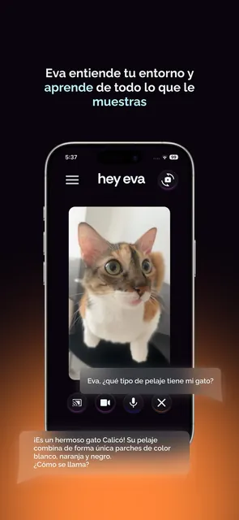
Hey Eva Describe lo que ve la cámara: aquí, el pelaje de un gato.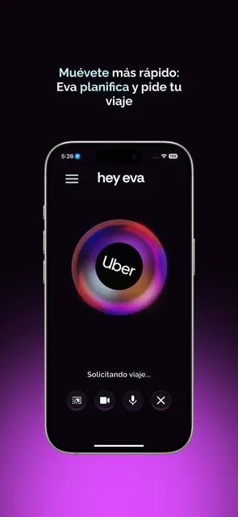
Hey Eva Pide un Uber por voz.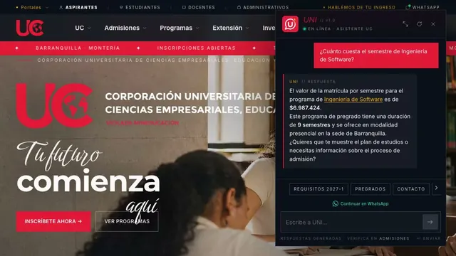
Video. UC Contigo UNI, el asistente del sitio, respondía cuánto cuesta un semestre de Ingeniería de Software. Grabado en una copia local de la versión entregada.


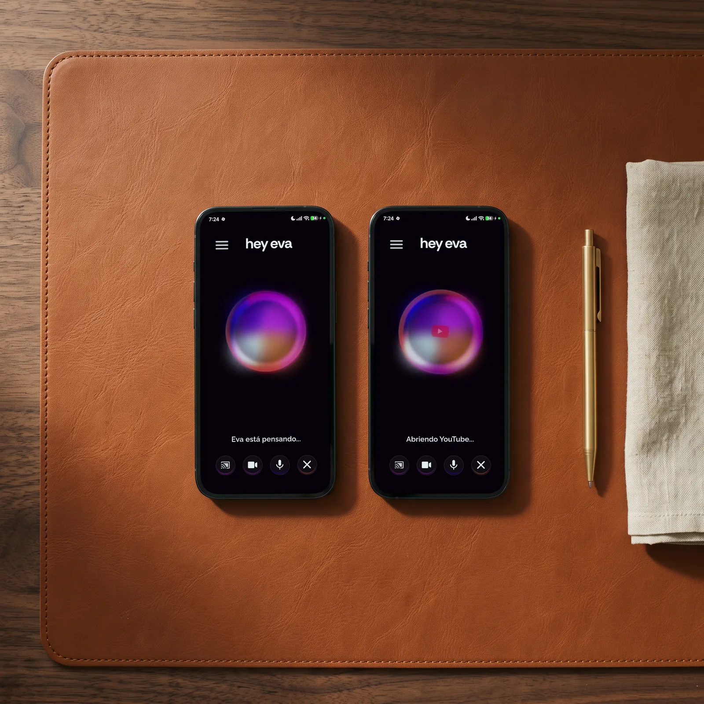
02Tecnología
Apps para iPhone y Android
Una sola app para las dos tiendas: inicio de sesión con Apple o Google, suscripciones y pagos dentro de la app.
- Diseño fiel a tu Figma
- Suscripciones y compras
- Publicación en las tiendas
En las pantallas: Hey Eva en Android, pensando y abriendo YouTube por voz. Ver el caso (se abre en otra pestaña)
Del portafolio5 muestras


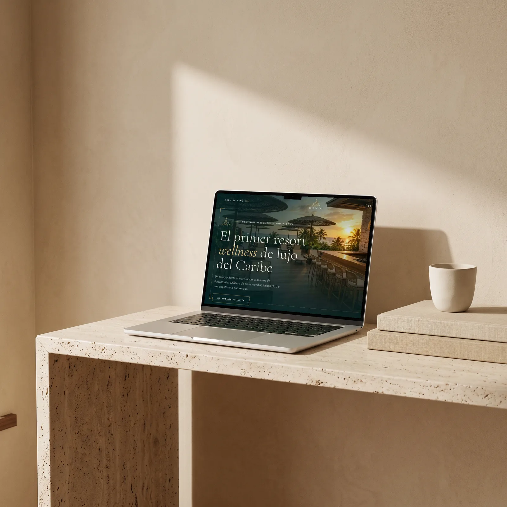
03Tecnología
Páginas web y tiendas en línea
Sitios para marcas, hoteles, inmobiliarias y universidades, y tiendas que cobran en línea o reciben el pedido por WhatsApp.
- Editor para cambiar textos y fotos
- Pagos con Wompi, Bold o Mercado Pago
- Píxel de Meta y Google Analytics
En la pantalla: el sitio de Bondi Wellness Hotel, en vivo. Ver el caso (se abre en otra pestaña)
Del portafolio5 muestras
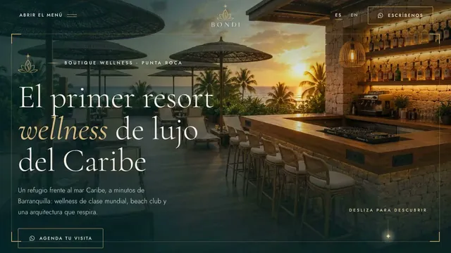
Video. Bondi Wellness Hotel Un sitio que se recorre como una película, en español e inglés. En vivo.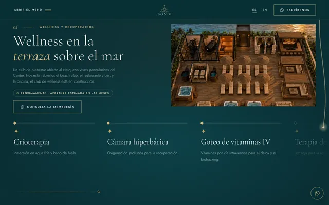
Bondi Wellness Hotel La sección de bienestar: la terraza desde el aire y los tratamientos.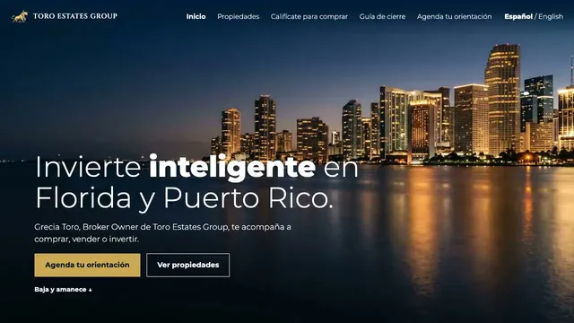
Video. Toro Estates Group Amanece mientras bajas: abre en Miami de noche y termina de día. Vista previa, aún sin lanzar.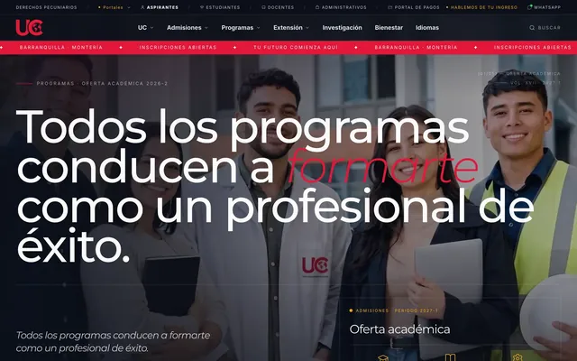
UC Contigo El catálogo de programas de una universidad de Barranquilla, hecho por Jerick por contrato con GPS The Marketing Machine y entregado con su código y su documentación.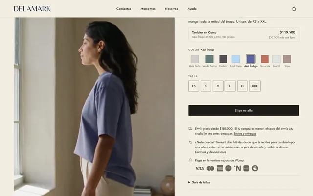
Delamark Página de producto: colores, tallas, envío y medios de pago.


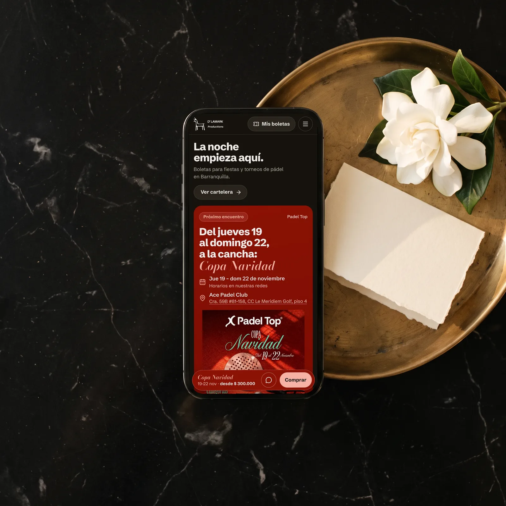
04Tecnología
Venta de boletas y pagos en línea
Cartelera de eventos, pago en línea y boleta con código QR, con un panel para ver cada venta.
- Pagos con Wompi
- Boletas con código QR
- Panel de ventas
En la pantalla: dlamark.com, que vende boletas de verdad desde el 22 de octubre de 2026. Ver el caso (se abre en otra pestaña)
Del portafolio6 muestras
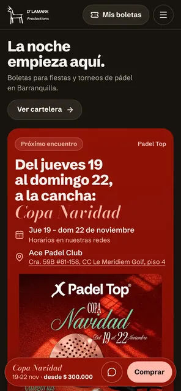
D'Lamark Productions dlamark.com en el celular: la cartelera y el botón de compra.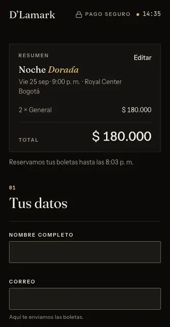
D'Lamark Productions El pago desde el celular, sin crear cuenta.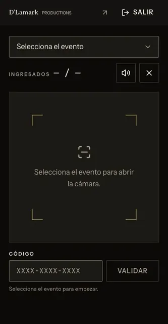
D'Lamark Productions El escáner de la puerta: el personal valida cada boleta con la cámara o con el código.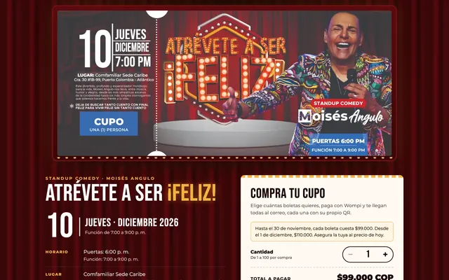
Konsiente Venta de boletas para un show de comedia, sobre la hoja de cálculo que el cliente ya usaba.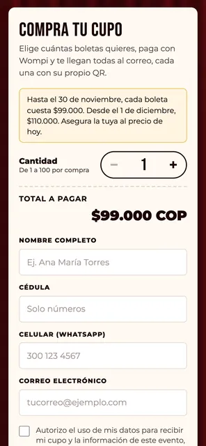
Konsiente La compra en el celular: cantidad y total a pagar.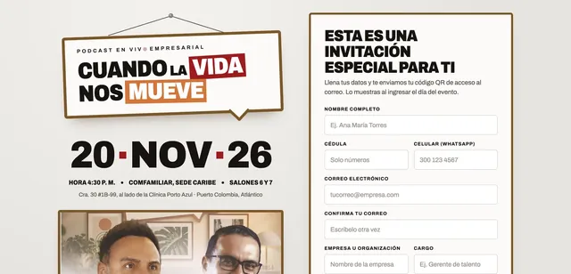
Konsiente Registro gratis con código QR para un pódcast en vivo.


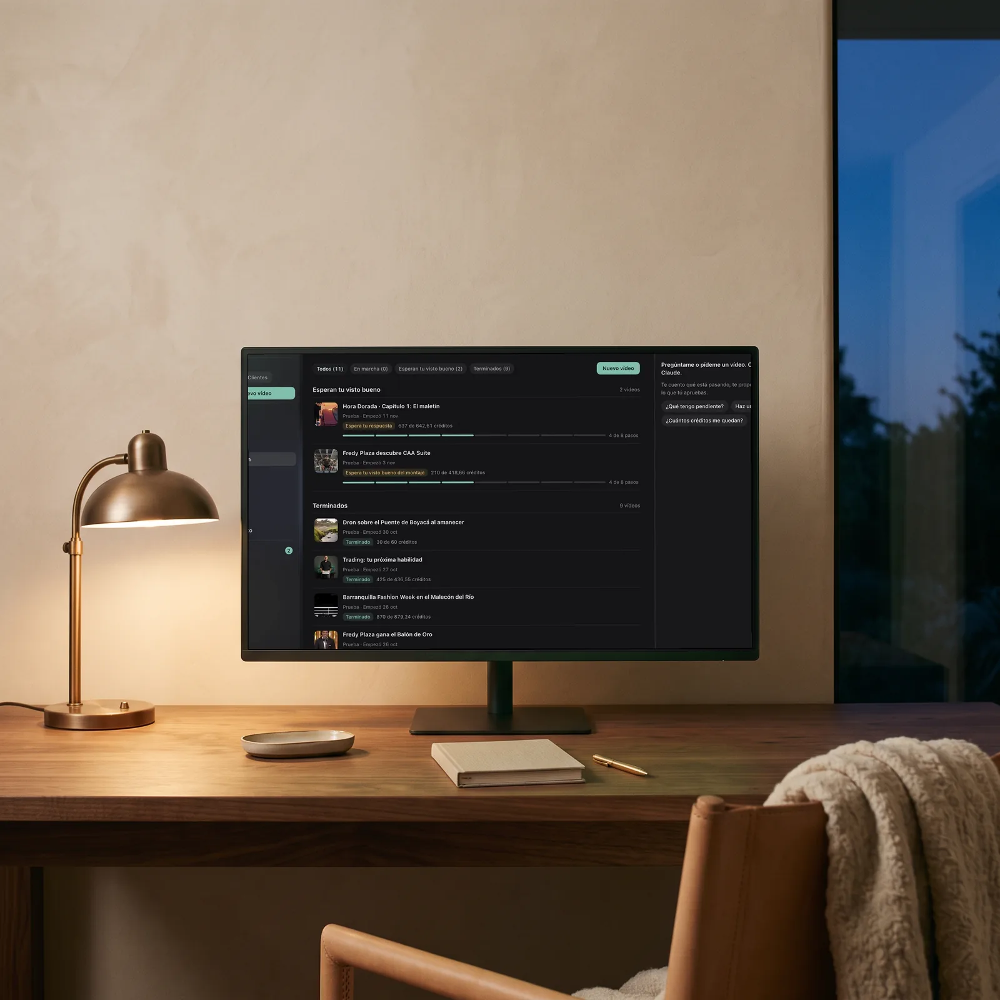
05Tecnología
Automatización y agentes de IA
Agentes de IA que hacen el trabajo repetitivo de tu negocio, como responder mensajes, ordenar datos o armar reportes. Una persona aprueba antes de que algo salga.
- Agentes con Claude y Gemini
- Conexión con WhatsApp y tus programas
- Aprobación humana antes de enviar
En la pantalla: CAA Suite, donde agentes de IA llevan cada video del guion a la publicación y una persona aprueba cada gasto. Ver el caso (se abre en otra pestaña)
Del portafolio4 muestras
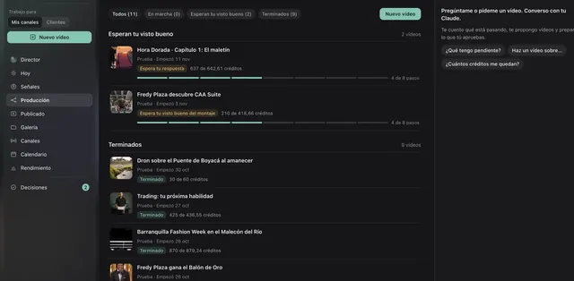
CAA Suite Producción: dos videos esperan aprobación y nueve están terminados, cada uno con los créditos que usó.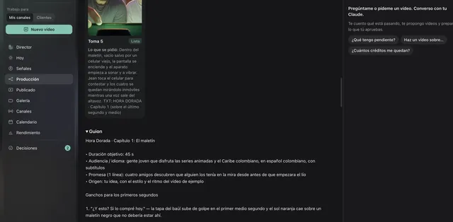
CAA Suite El guion de un video: duración, público, promesa y los ganchos de los primeros segundos.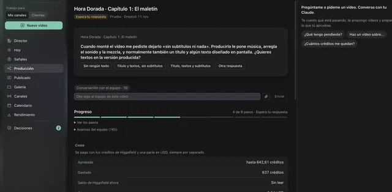
CAA Suite El equipo de agentes pregunta antes de seguir y una persona elige la respuesta.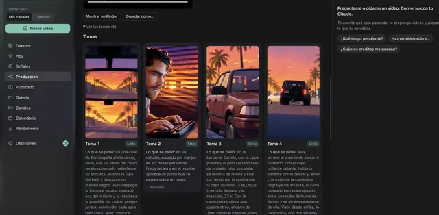
CAA Suite Las tomas de un video, con lo que se pidió y cuántos intentos tomó cada una.


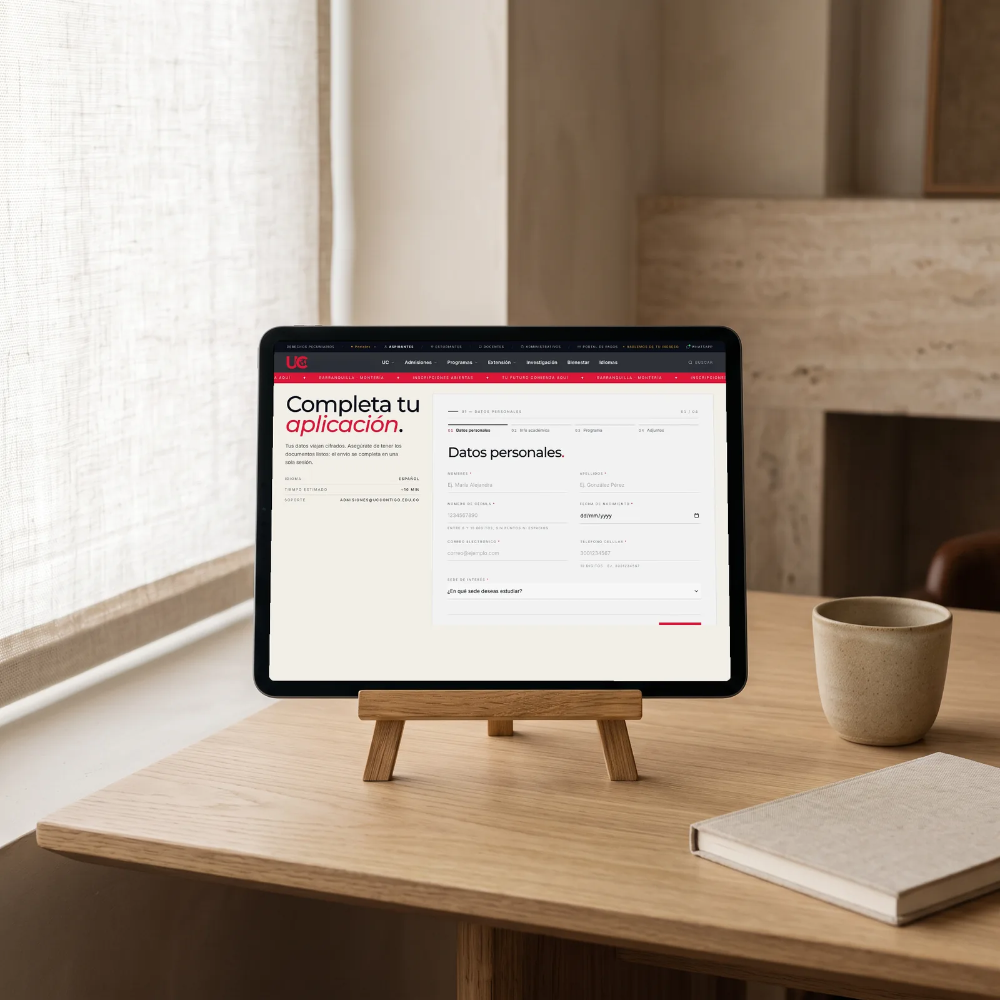
06Tecnología
Software a la medida
Programas hechos para la forma en que trabaja tu empresa: inventario, ventas, contabilidad y pedidos en un mismo lugar.
- ERP y contabilidad
- Conexión con tu punto de venta
- Pruebas automáticas en cada entrega
En la pantalla: la inscripción en línea de UC Contigo, en cuatro pasos, que Jerick desarrolló como líder técnico por contrato con GPS The Marketing Machine. También hicimos un ERP y sistema contable para una fábrica de muebles, en uso diario. Ver el caso (se abre en otra pestaña)
Del portafolio3 muestras
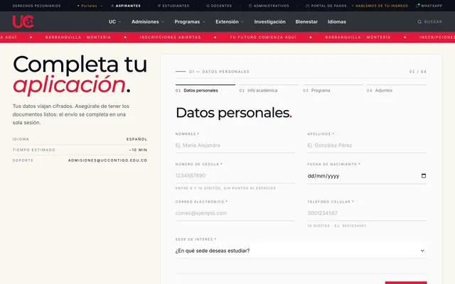
UC Contigo La inscripción en línea tenía cuatro pasos: datos personales, información académica, programa y adjuntos.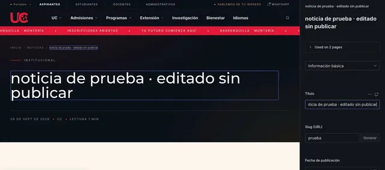
Video. UC Contigo El estudio de contenido que se entregó: la página a la izquierda y el panel de edición a la derecha.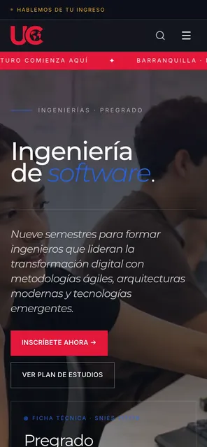
UC Contigo La ficha de un programa en el celular, con los botones para inscribirse.


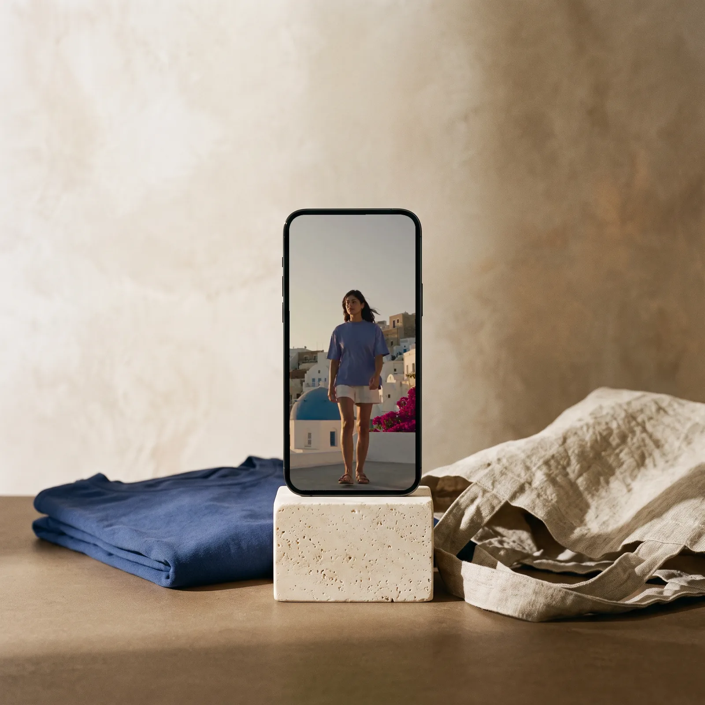
07Marketing
Pauta en Meta Ads
Campañas en Instagram y Facebook que llevan a la gente a tu WhatsApp o a tu tienda. Tú apruebas cada anuncio y el presupuesto antes de que salga.
- Campañas a WhatsApp o a tu tienda
- Revisión el día 3 y el día 7
- Informe en pesos y en dólares
Con Delamark, nuestra marca propia: el video vertical de la tienda, la tienda en modo de prueba y el pago. Todavía no hay una campaña suya que mostrar. Ver el caso (se abre en otra pestaña)
Del portafolio4 muestras
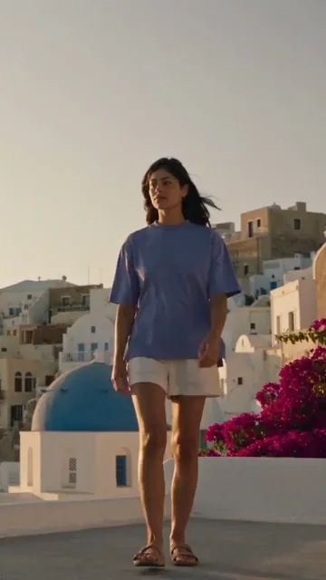
Video. Delamark El video vertical de la portada de la tienda en el celular.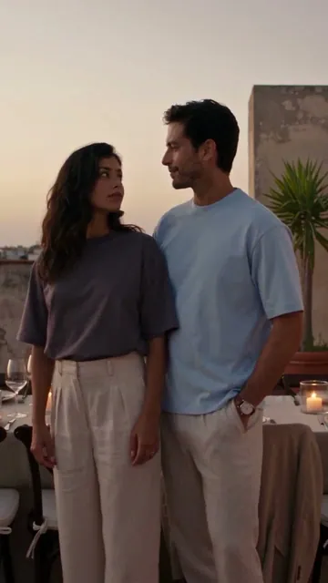
Video. Delamark «Sobremesa», película de marca, octubre de 2026. Sin sonido.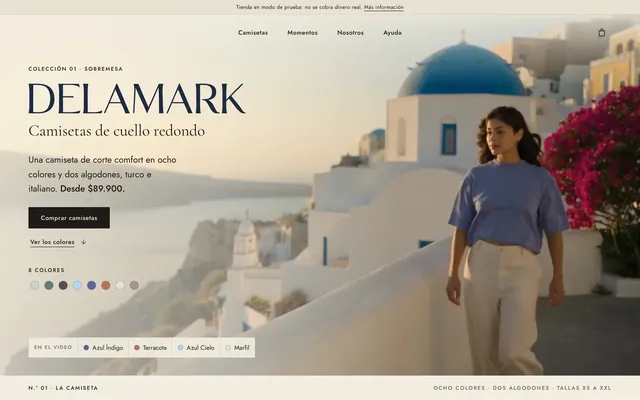
Delamark La tienda, en modo de prueba: todavía no cobra dinero real.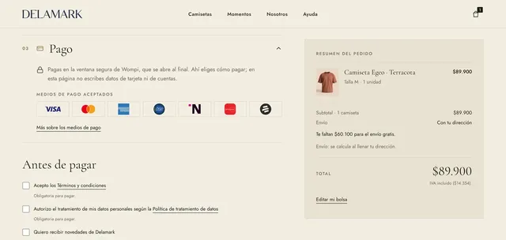
Delamark El pago: medios aceptados y resumen del pedido.


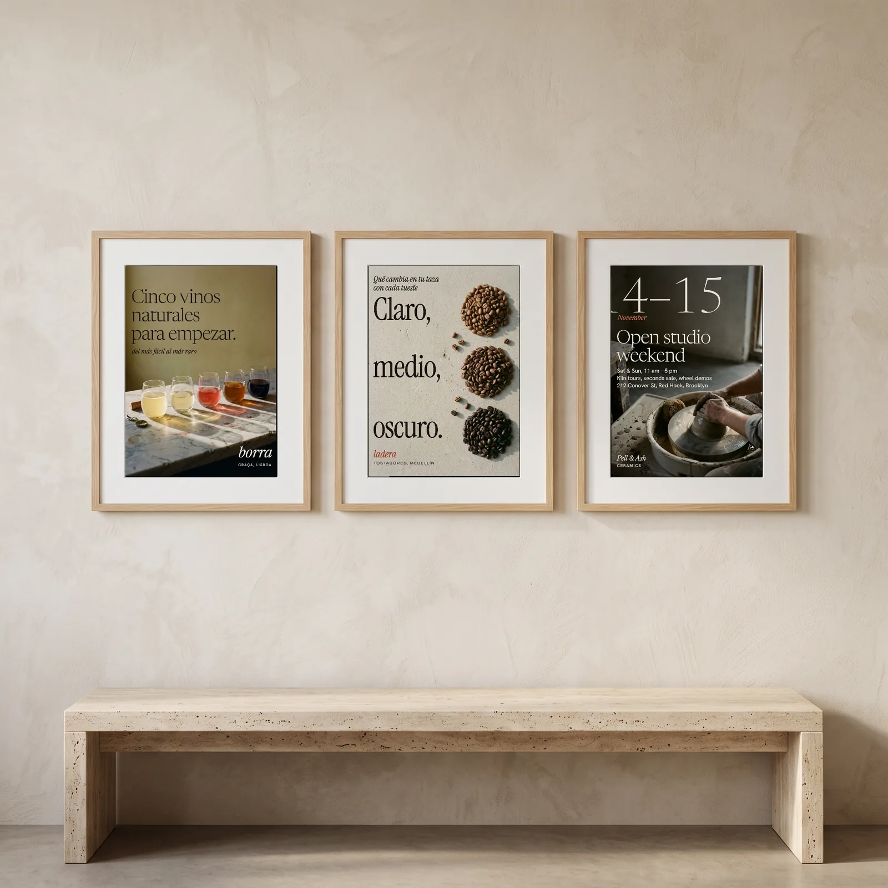
08Marketing
Contenido para redes
Guiones listos para grabar, reels y carruseles con su calendario del mes. Cada pieza termina con una sola invitación: escribirte.
- Guiones segundo a segundo
- Calendario mensual
- Carruseles e historias
En los cuadros: piezas hechas con el kit de KVRA para marcas inventadas que sirven de demostración. Ver el caso (se abre en otra pestaña)
Del portafolio7 muestras
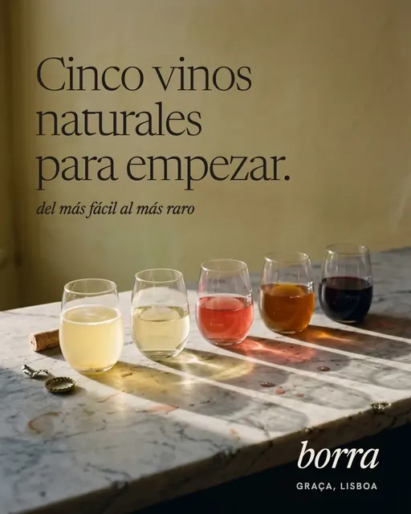
Kit de KVRA Portada de carrusel para «borra», un bar de vino natural en Lisboa (marca inventada).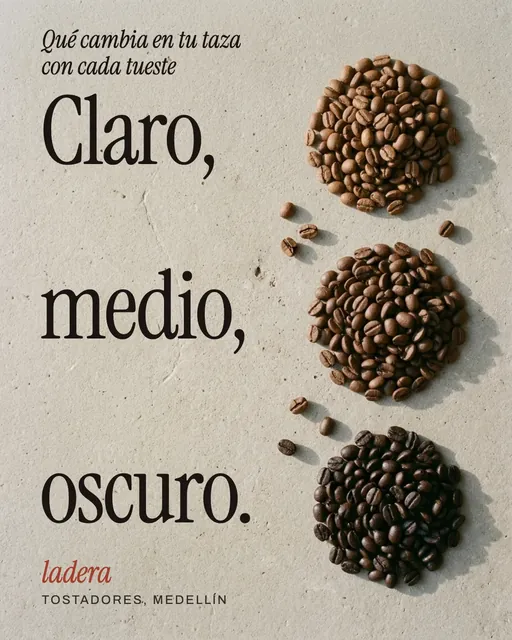
Kit de KVRA Carrusel para Ladera, tostadores de café en Medellín (marca inventada).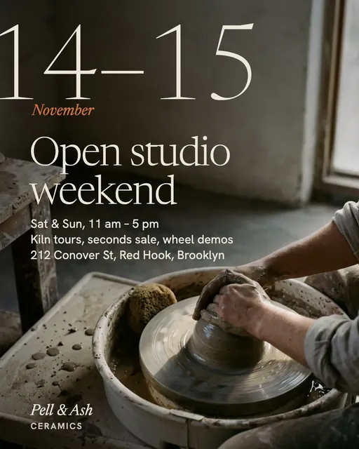
Kit de KVRA Post para Pell & Ash, un taller de cerámica en Brooklyn (marca inventada).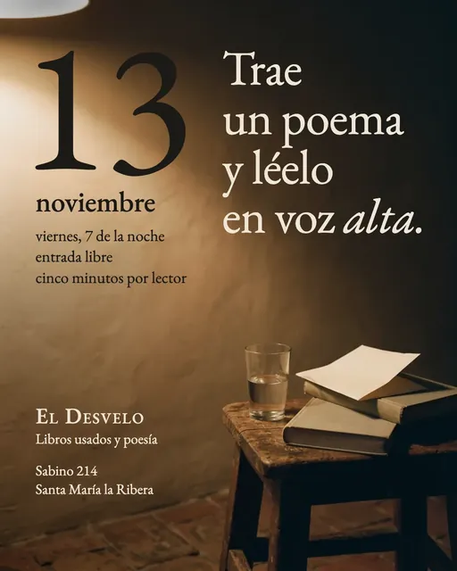
Kit de KVRA Post para El Desvelo, una librería en Ciudad de México (marca inventada).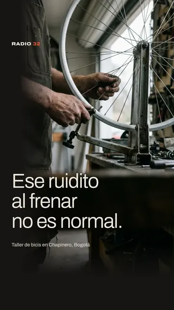
Kit de KVRA Historia para Radio 32, un taller de bicicletas en Bogotá (marca inventada).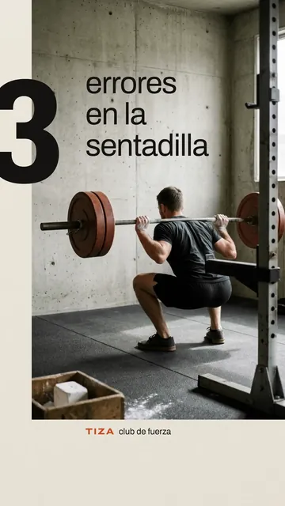
Kit de KVRA Portada de reel para Tiza, un club de fuerza (marca inventada).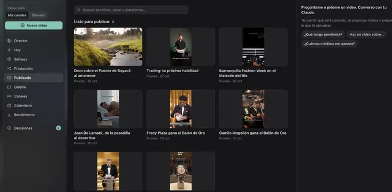
CAA Suite Videos terminados y listos para publicar.


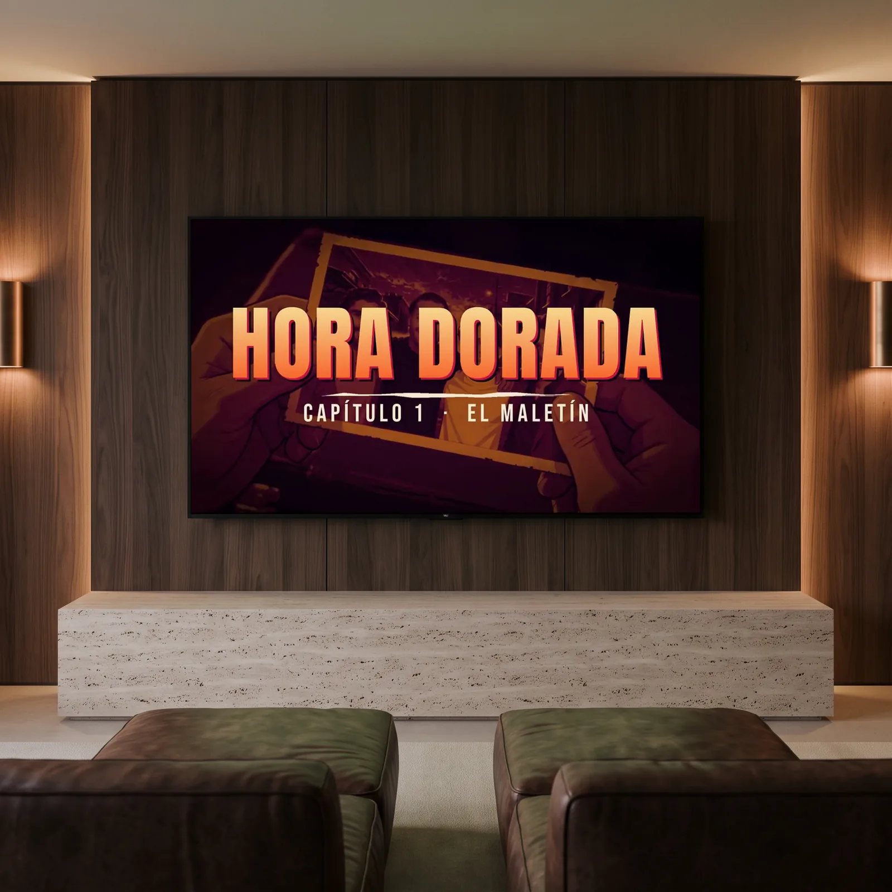
09Marketing
Edición de video y video con IA
Reels y anuncios cortados al ritmo de la música, con títulos animados, el cierre con tu logo y música original hecha para cada pieza.
- Edición de reels y anuncios
- Animación de tu logo
- Escenas y música hechas con IA
En la pantalla: Hora Dorada, capítulo 1, «El maletín», hecho con IA. Ver el caso (se abre en otra pestaña)
Del portafolio4 muestras
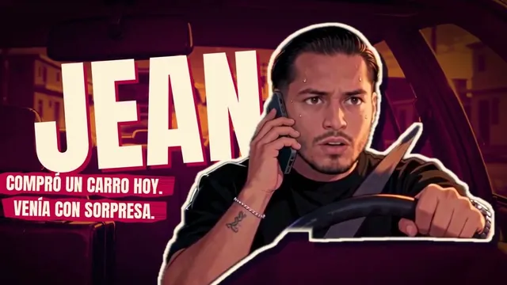
Video. Hora Dorada Capítulo 1, «El maletín», 12 de noviembre de 2026. Con sonido.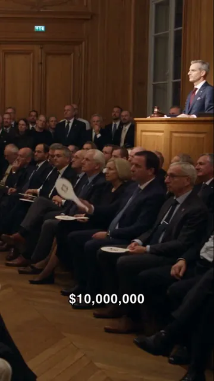
Video. CAA Suite Video corto producido con CAA Suite: una subasta. Octubre de 2026.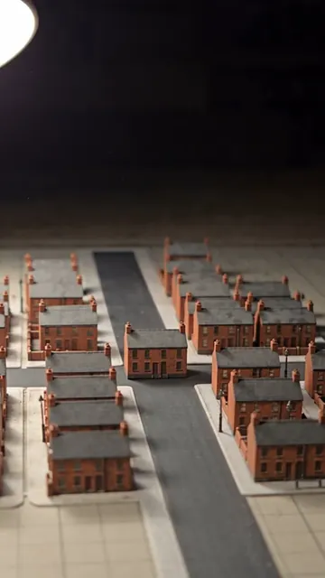
Video. CAA Suite Video corto producido con CAA Suite: una ciudad en miniatura. Agosto de 2026.- Video. CAA Suite Video corto producido con CAA Suite: una pasarela. Octubre de 2026.
10Marketing
Flyers, marca y fotos con IA
Flyers para post e historia, logo e identidad de marca, y fotos para redes y de producto hechas con IA.
- Flyers de eventos
- Logo e identidad
- Fotos con IA para redes
En la portada: el manual de marca de Delamark. Ver el caso (se abre en otra pestaña)
Del portafolio6 muestras
- Delamark Portada del manual de marca: el monograma DM y la frase «Hecha para quedarse un rato más».
- Delamark Tablero para elegir el logo: la ruta «Sastrería» con tres propuestas.
- Delamark La colección en cuatro colores, con el precio de cada tela.
- Kit de KVRA Un café de filtro junto a la ventana: foto para un post generada con IA por el kit, octubre de 2026.
- Kit de KVRA Unas manos en un torno de cerámica: foto para un post generada con IA por el kit, octubre de 2026.
- Kit de KVRA Cinco copas con bebidas de colores sobre mármol: foto para un post generada con IA por el kit, octubre de 2026.


11Eventos
Producción de eventos
Fiestas con una historia detrás: el concepto, el guion de la noche, el minuto a minuto, el presupuesto y la venta de boletas.
- Concepto e historia
- Minuto a minuto y guion del presentador
- Presupuesto en pesos y dólares
Imagen de ambiente hecha con IA. Las fiestas las produce D'Lamark Productions. Ver dlamark.com (se abre en otra pestaña)


Hablemos
Cuéntanos qué necesitas y te decimos por cuál servicio empezar.
+57 300 674 6770 por WhatsApp (se abre en otra pestaña) Ver el portafolio completo (se abre en otra pestaña)